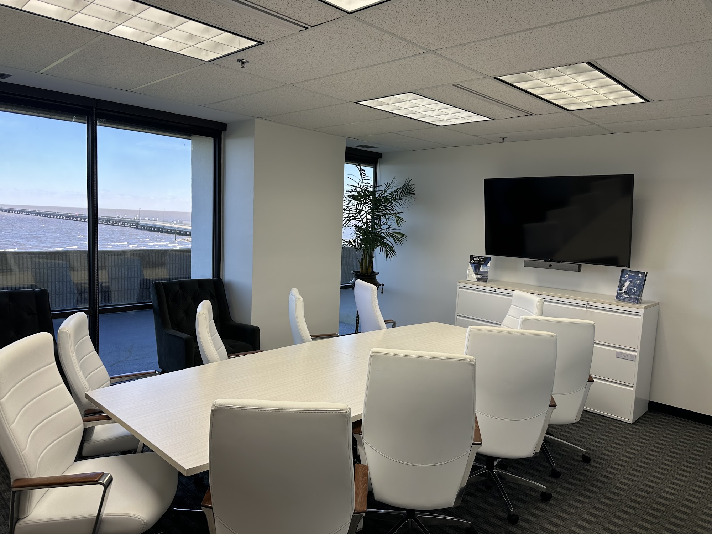

Jefferson Parish Claims Need Insight
When an accident raises questions about responsibility, early attention to the surrounding facts can preserve a clearer record. A meeting with personal injury lawyer metairie may help organize photographs, incident reports, witness names, and other materials while memories remain fresh. It is also useful to note where the event occurred, what conditions were present, and how each person responded immediately afterward. personal injury lawyer metairie can offer a structured way to examine whether the available evidence supports a coherent account without relying on assumptions or incomplete recollections.
Understanding the roles of the parties can make later communications easier to evaluate. personal injury lawyer metairie may review how statements, records, and expert observations fit together while explaining which facts still require verification. Clear, consistent documentation can reduce confusion when accounts differ, especially if photographs, surveillance footage, or witness testimony become important. With personal injury lawyer metairie, an individual can ask focused questions about responsibility, negotiation, and the practical steps that may follow while retaining control over personal decisions.
Every matter develops according to its own facts, so useful guidance should be tailored rather than based on a generic checklist. personal injury lawyer metairie can help a person understand how local procedures, available evidence, and the conduct of other parties may affect the direction of the matter. Keeping an organized, factual account of significant events and preserving relevant materials can support clearer discussions over time. The goal is a well-informed process that addresses immediate questions and broader considerations associated with pursuing a fair resolution.

Lakefront Crashes Require Careful Investigation
An incident near a waterfront roadway can involve interacting conditions that are not obvious from a brief account. Sightlines may change with curves, parked vehicles, glare, landscaping, or activity along the shore, and traffic patterns can shift during events or seasonal periods. A review with personal injury lawyer metairie can help separate confirmed observations from assumptions, while personal injury lawyer metairie may examine whether the roadway's design and surrounding land use affected how people could perceive and respond to danger.
A sound reconstruction draws on more than statements made after the event. Vehicle damage can reveal the direction and force of contact, onboard systems may record changes in speed, and camera footage can establish sequence when available. Records concerning signal timing, temporary barriers, shoreline access, and prior complaints may add context without deciding the issue by themselves. personal injury lawyer metairie can coordinate these sources into a coherent timeline, and personal injury lawyer metairie may identify gaps that warrant independent verification before conclusions are reached.
The resulting analysis should account for uncertainty as well as evidence that supports a particular explanation. It may distinguish a driver's conduct from conditions created by a property owner, public agency, contractor, or another road user, and it can show where competing accounts do not align. By approaching the matter with an objective record and clearly defined questions, personal injury lawyer metairie can help an affected person understand the available information and respond in a more informed way.
Causeway Collisions Raise Distinct Questions
After a multi-vehicle crash on an elevated roadway, the central questions may involve more than the point of impact. Vehicle spacing, lane changes, merging decisions, roadway design, and the sequence of traffic signals can affect how responsibility is assessed. A review with personal injury lawyer metairie can help identify which facts need verification, while personal injury lawyer metairie may explain how police findings, driver statements, and available roadway data fit into the broader analysis.
These incidents can involve several drivers, commercial carriers, public agencies, or maintenance contractors, each with different records and obligations. Establishing the order of events may require comparing vehicle damage, dispatch communications, onboard data, traffic-camera footage, and maintenance information. personal injury lawyer metairie can help evaluate which sources may clarify disputed points, and personal injury lawyer metairie may assist in presenting a consistent account of the harm without overstating what the evidence shows.
A thoughtful claim strategy should account for the roadway's public setting, the number of potentially involved parties, and disagreements about causation. Before accepting an insurer's position or signing a release, a person may benefit from understanding how liability rules, available coverage, and documented losses apply to the specific circumstances. A consultation with personal injury lawyer metairie can provide a structured explanation of possible next steps and help keep communications focused, accurate, and proportionate to the facts.
Poolson Oden
Poolson Oden
3900 N Causeway Blvd Suite 680, Metairie, LA 70002
504-766-2200